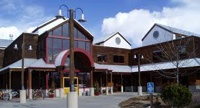
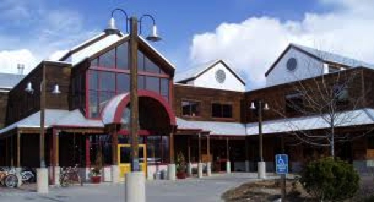
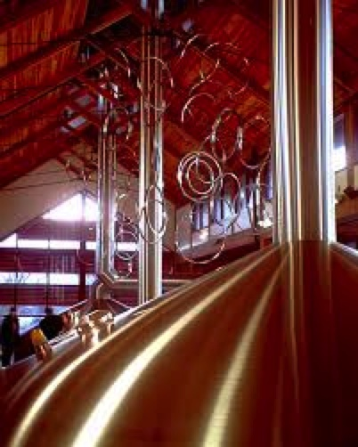
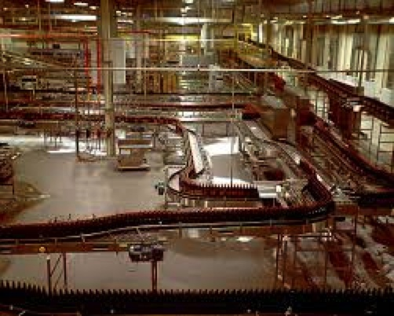

New Belgium Brewery
Located in the Old Town section of Fort Collins Colorado, New Belgium has been on of the truly great start up stories for craft beer. Current CEO Kim Jordan and her ex-husband Jim Lebesch started New belgium as a commercial business in 1991. This is not how it originally started. Jim Lebesch was traveling through Belgium via a fat tire bike during the late 80's when he had a dream to bring the knowledge of Belgium brewing back to the state of Colorado. Jim and his wife started brewing in their basement, perfecting their skill before they ran out of room to store the newly brewed beer. This lead them to open up the brewery, and since that time in Belgium, on a fat tire bicycle, the craft industry has never looked back.
New Belgium is an employee owned company who take pride in the beer the brew. Doing local collaborations with neighboring breweries, or coming up with a new brew, this company is staying ahead of the competition. To find out more information on New Belgium Brewery, please feel free to visit their website!
Photo Gallery of New Belgium
-

Building
-

Fermenting beer
-

Bottle Line